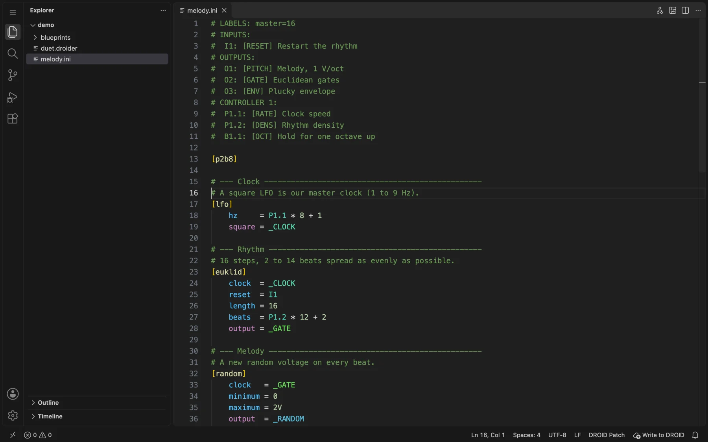
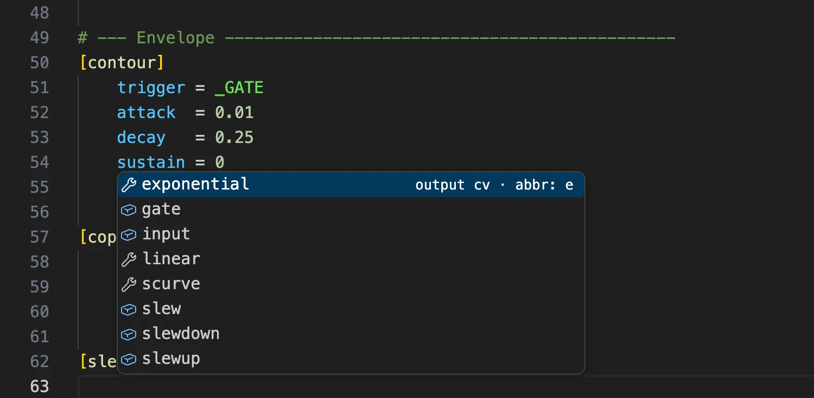
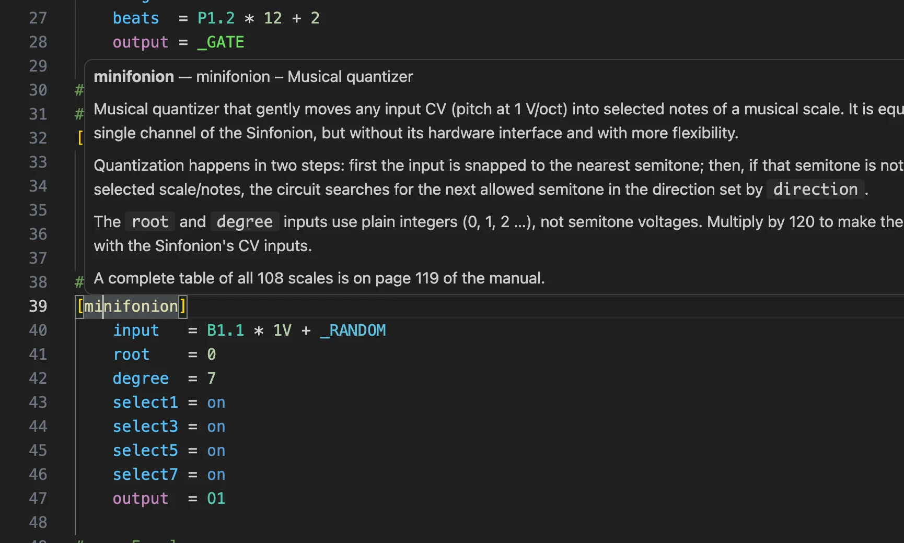
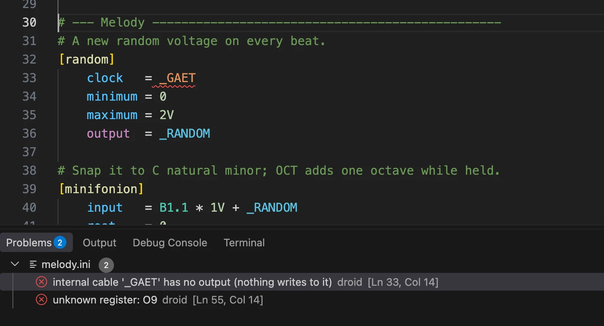
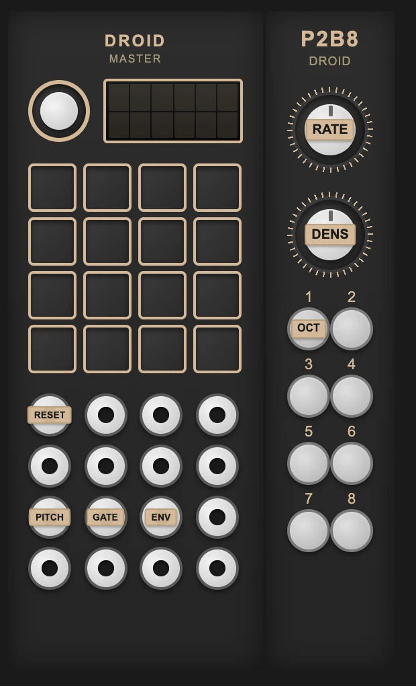
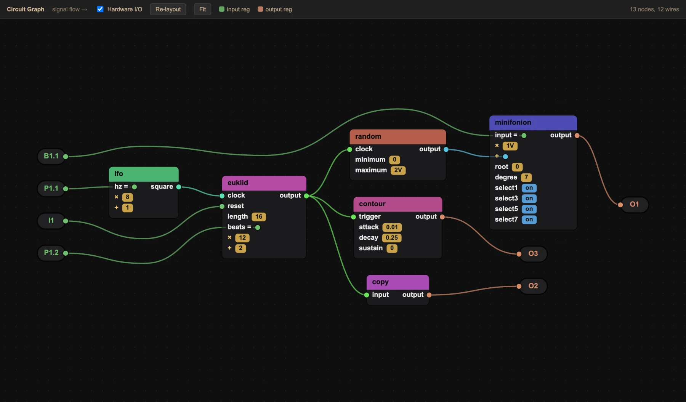
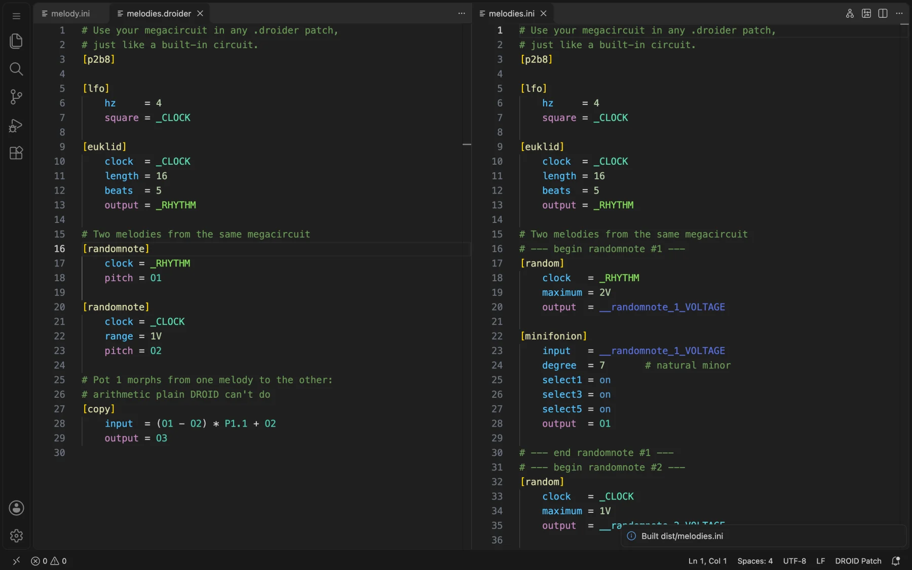

Start wherever you are. Each section on the left answers one question. If you've never used a code editor, follow the guide from the top: it takes about ten minutes.
A DROID patch is a plain text file (droid.ini) that lists circuits and how they are wired. You can write
it in any text editor, but a text editor knows nothing about DROID. If you misspell a parameter or use a jack that
doesn't exist, you only find out when the module blinks an error.
Droider is an extension for VS Code. It teaches VS Code the DROID language: every circuit,
parameter, register and controller from the official manual. With it, VS Code:
checks your patch as you type, with the same rules the DROID master uses;
suggests circuits, parameters, jacks and cables, and shows their documentation;
colours inputs, outputs and each cable differently, so a patch is easy to read;
draws your rack and a graph of the patch;
writes the patch to the SD card and ejects it safely;
adds an optional .droider syntax with reusable megacircuits and free arithmetic.
It is free, open source, works offline and doesn't need an account.
What VS Code is
Visual Studio Code (VS Code) is a free text editor from Microsoft for Windows, macOS and Linux.
Programmers use it to write code, but it works well for any text that follows rules, like a DROID patch.
Some things that make it a good home for patches:
Extensions add support for new languages. Droider is one of them.
You open a folder and see all its files in a sidebar, so all your patches are one click away.
Errors are underlined in red and listed in a Problems panel, like a spell checker.
Undo history, search and replace across files, split views, and automatic saving if you want it.
Don't worry about the rest. VS Code has many features for programmers. You don't need any of them to write patches: this guide covers everything you need.
Click Mac (Universal) on the download page. You get a .zip file in your Downloads folder.
Double-click the .zip to unpack it. You get Visual Studio Code.app.
Drag Visual Studio Code into your Applications folder.
Open it from Applications or Launchpad. If macOS asks whether you want to open an app downloaded from the internet, click Open.
Click Windows on the download page (the User Installer is fine). You get a VSCodeUserSetup….exe file.
Run it, accept the agreement and click Next through the defaults. Leaving Add to PATH ticked is useful later.
Click Install, then Finish. VS Code opens.
Download the .deb (Debian, Ubuntu) or .rpm (Fedora, openSUSE) package from the download page.
Install it with your software centre (double-click it), or in a terminal with sudo apt install ./code_*.deb or sudo dnf install ./code-*.rpm.
Open Visual Studio Code from your applications menu. A Snap package (sudo snap install code --classic) works too.
The first time VS Code opens it shows a Welcome page. You can close it with the × on its tab.
Install Droider
In VS Code, open the Extensions view: click the icon made of four squares in the bar on the far left, or press Ctrl+Shift+X (⌘+⇧+X on a Mac).
Type Droider in the search box at the top.
Click Droider — DROID Patch Language by oliverlsanz, then click Install.
That's it. There's nothing to configure: Droider switches on as soon as you open a .ini, .droider or .blueprint file.
Other ways to install. Click Install on the Marketplace page, which opens VS Code for you. In Cursor, VSCodium and other editors based on VS Code, download the .vsix file from the latest release. Then, in the Extensions view, open the … menu and choose Install from VSIX….
Droider updates itself when a new version comes out, like every VS Code extension.
VS Code in five minutes
These are the only parts of VS Code you need for patching:

The Explorer on the left, the editor in the middle, the status bar at the bottom.
Part
What it's for
Explorer (left)
The files of the folder you opened. Click one to open it. Toggle it with Ctrl+B / ⌘+B.
Editor (middle)
Where you write. Each open file gets a tab. Drag a tab to the side to see two files at once.
Status bar (bottom)
Shows the number of errors and warnings, and the file's language (DROID Patch). Droider's Write to DROID button appears here.
Problems panel
The list of every error. Open it with Ctrl+Shift+M / ⌘+⇧+M, or by clicking the error count in the status bar.
Command Palette
Every command, searchable. Open it with Ctrl+Shift+P / ⌘+⇧+P (or F1) and type DROID to see Droider's commands.
A few keys worth knowing:
Ctrl+S / ⌘+S saves. A dot on a tab means the file has unsaved changes. Turn on File → Auto Save if you'd rather not think about it.
Ctrl+Z / ⌘+Z undoes, as many steps as you like.
Ctrl+Space shows suggestions at the cursor at any time.
Ctrl+F / ⌘+F finds text; Ctrl+P / ⌘+P opens a file by name.
Writing patches
Open your patches
Keep your patches together in one folder on your computer, for example Documents/DROID Patches. Then:
Choose File → Open Folder… and select that folder. If VS Code asks Do you trust the authors of the files in this folder?, click Yes, I trust the authors. Droider only runs in trusted folders.
Your patches appear in the Explorer. Click one to open it.
Check the bottom-right corner of the status bar: it should say DROID Patch. That means Droider is checking the file.
Why a folder and not a single file? Droider finds your megacircuits (.blueprint files) anywhere in the open folder, and builds .droider patches into a dist folder inside it.
You can also edit a patch straight on the SD card: open the card itself as the folder. But it's safer to keep the originals on your computer and let Droider write the card for you.
Let's build a small generative melody: a clock, a Euclidean rhythm, random notes snapped to a scale and a plucky envelope. You need a DROID master and a P2B8 controller, but you can follow along without them.
Create the file. In the Explorer, click the New File icon next to your folder's name, type melody.ini and press Enter. Droider recognises the .ini extension.
Declare your controllers. Controllers go at the very top, in the order they're chained to the master. Type [p2, and Droider suggests p2b8. Press Enter to accept it; the ] is added for you.
melody.ini
[p2b8]
From now on, the pots P1.1, P1.2 and the buttons B1.1…B1.8 exist. Without this line, Droider would mark them as unknown registers.
Add a clock. On a new line, type [lfo and accept the suggestion. Press Enter: the next line is indented, and the LFO's parameters pop up. Pick hz, type = P1.1 * 8 + 1, then add square = _CLOCK.
_CLOCK is an internal cable: a name starting with _ that carries a signal from one circuit to others. Notice it's underlined: internal cable '_CLOCK' has no input. Nothing reads it yet. Droider will remind you until the wiring is complete.
Add a rhythm. A Euclidean rhythm spreads a number of beats over 16 steps. When you type the value of clock, type _ and choose _CLOCK from the list of cables. The underline on _CLOCK disappears.
Check the status bar. When it shows 0 errors, the patch is valid. Save it with Ctrl+S / ⌘+S.
Load it. Insert your DROID SD card and click Write to DROID in the status bar. Put the card in the master and press its Load button. More about writing the card.
Patch O1 to a VCO's 1 V/oct input, O3 to a VCA, and turn P1.1 and P1.2. The complete patch, with a label legend, is examples/melody.ini.
Write faster with autocomplete
Suggestions appear by themselves as you type. Use the arrow keys to choose and Enter or Tab to accept. Press Ctrl+Space to bring them back.
Where you type
What Droider suggests
[ at the start of a line
Every circuit, every controller (at the top of the patch) and your megacircuits (in .droider files).
An empty line inside a circuit
That circuit's parameters, with their type and abbreviation. Ones you've already used are left out.
After =
Registers your hardware actually has: I1…I8, O1…O8, gates, LEDs, and the pots and buttons of the controllers you declared.
_ after =
The internal cables already in the patch.
Inside a # LABELS section
The registers that belong in that section.

Parameters of [slew], with their kind (input or output) and abbreviation.
Pressing Enter after a circuit header indents the next line and shows the parameters. Pressing Enter after a parameter keeps the same indentation. When you've finished a circuit, press Enter twice: the first suggestion on an empty line is ↵ end circuit, which leaves a blank line and starts the next line at the left edge, ready for the next circuit.
Short names. Every DROID parameter has an abbreviation (clock → c). Droider accepts both and shows the abbreviation in suggestions and hovers. Long names are easier to read; short ones save space in big patches.
Look things up without the manual
Rest the mouse pointer on a word to see its documentation:
A circuit header like [minifonion]: what the circuit does.
A parameter: whether it's an input or output, its type, default value, range and description.
A register like P1.2 or G3: what that jack or control is.
A cable: how many times it is used.
A megacircuit: its description and ports, from the comments in its .blueprint.

The documentation is adapted from the official DROID manual (blue-7), with the author's permission.
Read the colours
Droider colours each part of a patch by what it does, not only by how it looks:
colours
# comments are green
[lfo] # circuit names, in yellow brackets
hz = P1.1 # inputs blue, registers teal
square = _CLOCK # outputs magenta, each cable its own colour
bipolar = on # on and off in blue
Inputs are blue and outputs are magenta. You can tell at once which lines feed a circuit and which send something out.
Registers (jacks, pots, buttons, LEDs) are teal.
Each internal cable gets its own colour, always the same for the same name. Follow _CLOCK by its colour through the whole patch.
The content of a circuit Droider doesn't know is shown in grey, because it can't be checked.
Droider runs the same checks as the DROID master when it loads a patch, every time you type. Problems appear in three places:
A wavy underline under the mistake: red for errors, yellow for warnings. Rest the mouse on it to read the message.
The status bar counts errors and warnings in the bottom-left corner.
The Problems panel (Ctrl+Shift+M / ⌘+⇧+M) lists them all. Click one to jump to its line.

A typo in a cable name, and an output that doesn't exist.
Errors would stop the DROID from loading the patch: fix them all. Warnings point at things that work but probably aren't what you meant, like a label that's too long to display.
Already got a blinking DROID? The module writes DROIDERR.TXT to the card with the line number. Open the same patch in VS Code: Droider shows the problem on that line, with an explanation.
What each error means
Message
What's wrong and how to fix it
unknown circuit: [lfoo]
No circuit has that name. Check the spelling; Ctrl+Space after [ lists them all.
unknown parameter 'speed' in [lfo]
That circuit has no such parameter. Hover the header or press Ctrl+Space on an empty line to see the valid ones.
unknown register: O9
That jack or control doesn't exist (the master has O1–O8), or its controller isn't declared at the top.
input-only register 'P1.1' used as an output
You can't write to a pot, button, switch or input jack. Use an output, an LED (L1.1) or a cable instead.
internal cable '_X' has no input (nothing reads from it)
Something writes the cable but nothing uses it. Connect it to an input, or remove it.
internal cable '_X' has no output (nothing writes to it)
Something reads the cable but no circuit writes it. Often a typo in the name.
internal cable '_X' used as an output more than once
Two circuits write the same cable. Each cable can have only one source; use two cables and a [mixer] or [copy].
math expression '…' is beyond DROID's native A * B + C
DROID inputs allow one multiplication and one addition, in that order. Split the calculation, or use a .droider file, which allows any arithmetic.
math expressions are only allowed on inputs
Outputs must go to one register or cable, with no arithmetic.
line too long: … characters
The DROID accepts at most 63 characters per line, not counting comments and indentation. Shorten cable names or use abbreviations.
missing value after '=' for parameter '…'
The line has no value. Add one or delete the line.
megacircuit [x] is not allowed in .ini files
Megacircuits only work in .droider files. Rename the file, then build it.
megacircuit [x] is missing input 'y'
That input of the megacircuit has no default value, so you must wire it.
label is 7 characters (recommended ≤5)
A warning: the Forge shows only about five characters of a short label.
Understanding a patch
Label your jacks and controls
A label legend is a block of comments at the top of a patch that says what each jack and control does.
The DROID ignores it (it's just comments), but the DROID Forge reads it, and so does Droider:
the labels appear in the hardware view and the circuit graph.
melody.ini
# LABELS: master=16
# INPUTS:
# I1: [RESET] Restart the rhythm
# OUTPUTS:
# O1: [PITCH] Melody, 1 V/oct
# O3: [ENV] Plucky envelope
# GATES ON MODULE 1:
# G1: [CLK] Clock out
# CONTROLLER 1:
# P1.1: [RATE] Clock speed
# B1.1: [OCT] Hold for one octave up
Each entry is register: [SHORT] long description. Both parts are optional.
Sections are # INPUTS:, # OUTPUTS:, # GATES ON MODULE n:, # GATES ON X7: and # CONTROLLER n: (n is the controller's position in the chain).
Droider suggests the right registers in each section and warns about registers that don't exist, are in the wrong section, or have a short label longer than five characters.
See your rack
Click the circuit board icon at the top right of the editor, or run DROID: Show Hardware View from the Command Palette. A panel opens next to your patch with:
the master (MASTER or MASTER18), any G8 and X7 expanders, and every controller you declared, in order;
the short labels from your legend on each jack, pot and button.

The view follows the patch you're editing and updates as you type. It's a quick way to check what each knob does before a performance.
Follow the signal in the graph
Click the hierarchy icon at the top right of the editor, or run DROID: Show Circuit Graph. Every circuit becomes a box and every cable a wire, laid out from left to right in the direction the signal flows.

Jacks and controls are the round nodes on the edges. Untick Hardware I/O to hide them.
Attenuation and offset on an input (× 8, + 1) are shown under it; fixed values appear as small tags.
Click a box to jump to that circuit in the patch. Drag boxes to rearrange them, drag the background to pan, and pinch or scroll to zoom.
Re-layout tidies everything again; Fit zooms to show the whole patch.
In .droider patches, megacircuits are a single box. Open a .blueprint and show its graph to see its inside: its inputs and outputs are drawn as jacks.
Loading the DROID
Write the patch to the SD card
Take the micro SD card out of your DROID master and insert it in your computer (with a card reader if needed). If you use an X7 with USB, switch it to USB mode instead.
Open your patch. A Write to DROID button appears on the right of the status bar. Droider recognises a card that has a droid.ini on it or is named DROID.
Click Write to DROID. Droider:
saves the patch, and builds it first if it's a .droider file;
refuses to write if the patch has errors, so a broken patch never reaches the module;
writes it as droid.ini at the root of the card, reads it back to verify it, and ejects the card.
When you see “Patch written and verified… card ejected safely”, put the card back in the master and press Load (or return the X7 USB switch to the centre).
It replaces droid.ini. Writing overwrites the droid.ini on the card. Keep your patches on your computer (as in Open your patches) so nothing is lost.
The button works on macOS, Windows and Linux (cards mounted under /media or /mnt). You can also run DROID: Write Patch to DROID Card and Eject from the Command Palette.
Several patches on one card
A DROID card can hold alternative patches named droidXY.ini, where X is a controller and Y a button.
For example, hold button 4 of the first controller while pressing Load to load droid14.ini.
Droider's button always writes droid.ini. For alternative patches, write the file to the card yourself (for a .droider patch, copy the built file from dist/).
Every alternative patch needs its own controller declarations at the top, or the buttons won't work to switch patches.
Going further
.ini, .droider and .blueprint
Droider understands three kinds of file. You choose the kind with the file's extension:
File
What it is
Runs on the DROID?
.ini
A plain DROID patch, exactly what the module reads. No extra syntax.
After building it to .ini, which Droider does for you.
.blueprint
The definition of one megacircuit: a reusable piece of patch with named inputs and outputs.
No, it's used inside .droider patches.
Any .ini patch is also a valid .droider patch: rename droid.ini to my-patch.droider and start using the extras.
Free arithmetic
On the DROID, an input can only do A * B + C: one multiplication, then one addition. In a .droider file
you can write any expression with +, -, * and parentheses, on any input:
The cables it creates are called _MATH1, _MATH2…, so you can tell them from yours. In the circuit graph the whole expression is shown as one formula.
Create a megacircuit
A megacircuit is a piece of patch you can reuse like a circuit. You define it once in a .blueprint file,
and the file's name becomes the circuit's name: pluck.blueprint defines [pluck].
Create a file anywhere in your open folder, for example blueprints/pluck.blueprint.
Describe it in a comment at the top, then list its inputs and outputs. A comment just above a port documents it. An input with = value has a default and is optional; one without it must be wired.
blueprints/pluck.blueprint
# A plucky voice: Euclidean gates, a random note snapped
# to C minor and a short decay envelope.
[input]
# the clock to follow
clock
# how many of the 16 steps play
beats = 5
# envelope decay time
decay = 0.25
[output]
# melody, 1 V/oct
pitch
# one gate per note
gate
# the plucky envelope
env
Write the body with ordinary circuits. Refer to the ports by their bare names (clock, pitch), and use _cables for internal wiring:
Droider checks the blueprint like any patch, and also warns about inputs you never use. Cables inside a blueprint are private: two copies of the megacircuit never share them. A blueprint can use other megacircuits too, as deep as you like.
Use a megacircuit
In any .droider patch in the same folder, the megacircuit works like a built-in circuit: it autocompletes, shows its documentation on hover and is checked.
Hover a megacircuit to see its description and ports.
Build to a plain .ini
The DROID only reads plain patches, so a .droider file is built into one. You rarely need to do it by hand: Write to DROID builds automatically. To see the result:
Open the .droider file.
Click the package icon at the top right of the editor, or Build to dist in the status bar (shown when no card is inserted), or run DROID: Build .droider to dist/*.ini.
Droider writes dist/<name>.ini in your folder and tells you if the result has errors.

The built patch: each megacircuit is replaced by its circuits, with comments marking where each copy starts.
During the build, private cables are renamed for each copy (_GATE in the second [pluck] becomes __pluck_2_GATE). Arithmetic is split into [copy] circuits. If a line ends up longer than the DROID's 63 characters, cable names are shortened, and comments in the output list the short names. The built patch is checked again before it can be written to a card.
Reference
DROID language cheat sheet
A summary of the patch language. For every circuit, hover it in VS Code or see the official manual.
Thing
Looks like
Notes
Circuit
[lfo]
Followed by its parameters, one per line.
Parameter
hz = 2
Indentation is optional but makes patches readable.
The exit code is 0 when there are no errors, 1 when there is at least one, and 2 for a wrong command or unreadable file. Warnings don't fail. Megacircuits are read from every .blueprint under the current folder.
Customise colours
Open Preferences: Open User Settings (JSON) from the Command Palette and add your own colours:
Droider works with any VS Code colour theme, light or dark. Cable colours are chosen automatically from each cable's name.
Troubleshooting
Nothing is coloured or checked
Look at the language in the status bar. If it doesn't say DROID Patch, click it and choose DROID Patch.
If a banner says Restricted Mode, the folder isn't trusted. Click Manage and trust it: extensions don't run in restricted mode.
My other .ini files are treated as DROID patches
Droider handles every .ini file. For a non-DROID .ini, click the language in the status bar and choose Ini. Or keep your DROID patches in their own folder.
The Write to DROID button doesn't appear
The patch must be the active editor, and must be a .ini or .droider file.
The card must have a droid.ini at its root or be named DROID. For a brand-new card, name it DROID when you format it (FAT32), or copy any droid.ini onto it once.
It says my megacircuit is an unknown circuit
Megacircuits only work in .droider files, not .ini.
The .blueprint must be inside the folder you opened in VS Code (in any subfolder).
Droider is a community project by Óliver L. Sanz, not affiliated with Der Mann mit der Maschine.
Circuit documentation is adapted from the official DROID manual with permission.